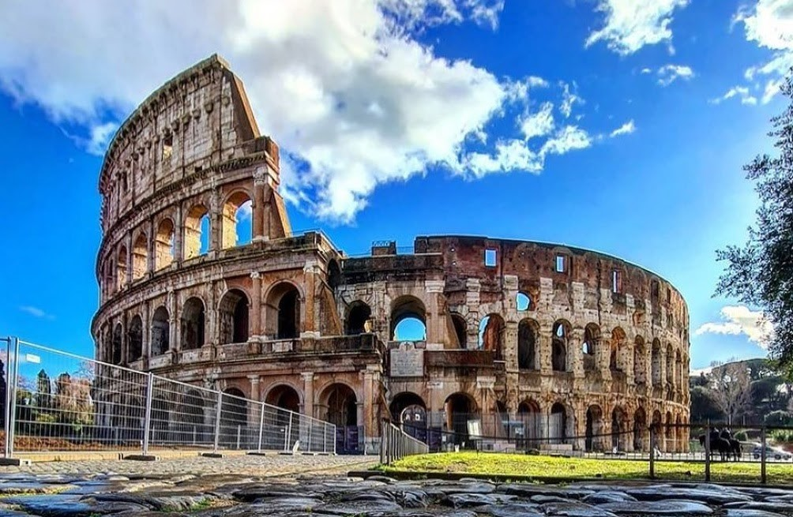
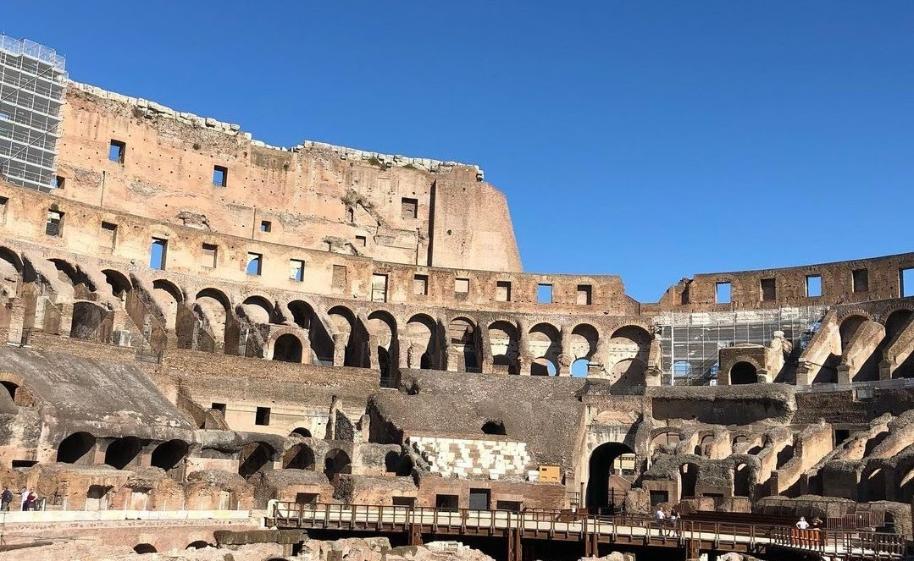
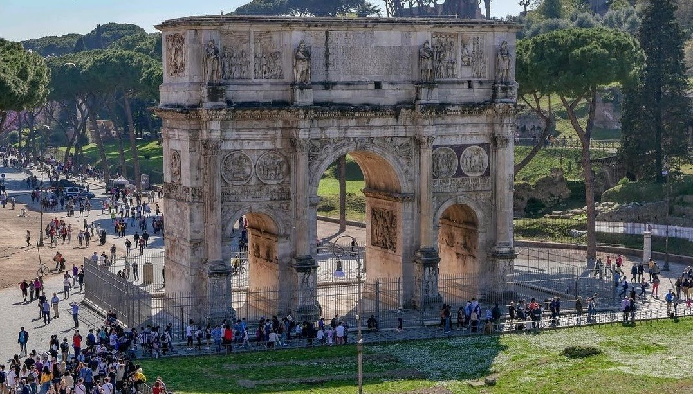

Colosseum - one of the most famous surviving historical monuments from antiquity in Italy. Let's explore this destination through the article below.
The Colosseum is one of the 7 architectural wonders of the world recognized in 2007, it is known as the Latin Amphitheater Amphitheater or Anfiteatro Flavio in Italian, today the Colosseum is called the Colosseum. or Colosseo.
Considered a symbol of Italy, the Colosseum is a large arena located in the city of Rome, Italy - One of the most attractive European tourist destinations. It has a capacity of up to 50,000 spectators and is used for gladiatorial competitions and Mass performances.
The arena was built between 70 and 72 AD under the emperor Vespasian. This is the largest structure built in the Roman Empire, completed in 80 AD under Titus, in the reign of Emperor Domitian, the work was heavily modified.
Colosseum (@testaccina1)
During the Middle Ages, a small church was built inside the arena, and the arena grounds were turned into a cemetery, a major change to the Colosseum. In the mid-14th century, the south side of the arena was completely destroyed by a major earthquake, precious materials from the ruins were stolen or requisitioned to rebuild other structures. Today, the Colosseum has become an attractive tourist destination for European and international tourists.
The Colosseum has a height of 48 meters, a length of 189 meters and a width of 156 meters. This is a work built on a flat ground and construction materials are entirely of travertine stone, linked together by 300 tons of iron rings, not using mortar, the architecture of the Colosseum does not follow the design style. of the Roman buildings or structures of that time with a liberal touch.
There are 80 doors surrounding the arena for spectators who can move quickly despite the large capacity of the arena, of which 76 gates are Roman-numbered for ordinary spectators, 1 gate is reserved for the king and his courtiers, the remaining 3 entrance gates are for the aristocracy. For the 4 entrance gates for the king and nobles are decorated with reliefs from painted stucco, according to the time stamp, only fragments remain, but this place still retains most of the architecture. original greatness from ancient times.
Explore inside the Colosseum (@newtravelplanner)
The Colosseum was built with the purpose of being a place for martial artists and slaves to compete. It is estimated that more than 500,000 people and more than 1 million animals have died in the arena because of the loss. In addition to serving as a place to serve the eye-catching matches of the Romans, the arena was also a place to hold public performances, plays, ... later, the arena was requisitioned as housing. People's shops.
The Colosseum also has close ties to the Catholic Church. Every year on Good Friday, this place is still used to hold the ceremony of the Way of the Cross presided over by the Pope.
The Colosseum is located at Piazza del Colosseo,1, 00184 Rome. You can move here by high-speed train, stopping at Metro line B, Colosseo station. - Opening time: 8:30 a.m. - 5:30 p.m. daily. - Ticket price: 16 Euro (about 450,000 VND), free for children under 18 years old and adults over 65 years old.
When visiting this destination, you need to keep a few points in mind:
- The Colosseum attracts up to 6 million Italian tourists every year, which means you'll have to wait quite a while to get into the arena. Therefore, you should arrive early to avoid long queues.
- The weather in Rome is quite hot in the summer and there is no shade inside the arena, so you should pay attention to avoid visiting in the summer or else prepare a hat, glasses, and umbrella carefully.
- The arena is a remnant of a stone construction, so you need to be careful when visiting to avoid falling or getting injured here, especially if you are traveling with children, please keep an eye on them.
- In addition to the Colosseum arena, you can also visit other monuments located in the complex such as the triumphal arch, the Roman Forum (Roman Forum), the Palatine hill,... are all interesting destinations in the complex. Ancient Roman.
Arc de Triomphe at the Colosseum (@samoylovlumix)
- You can take selfies, check-in in every corner of the arena, but it is forbidden to use selfie sticks and tripods, so please be careful to avoid trouble with the management here.
Above are BestPrice's summaries of useful information and experience of traveling to the Colosseum, hoping to help you when planning a trip to Italy - a country with this long-standing culture. Wish you have a meaningful trip.